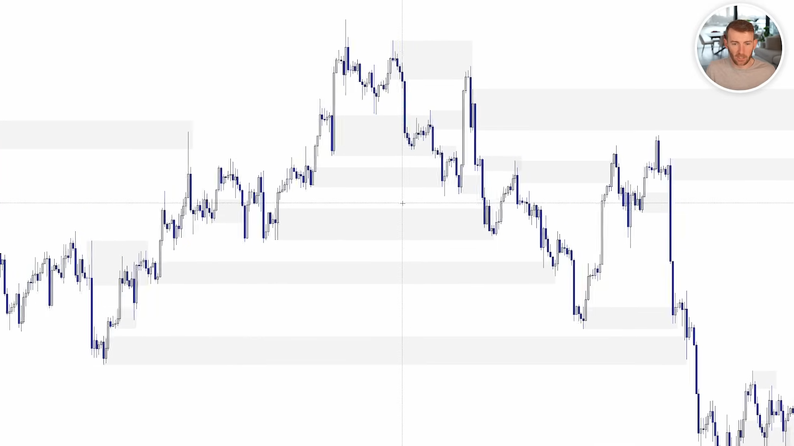
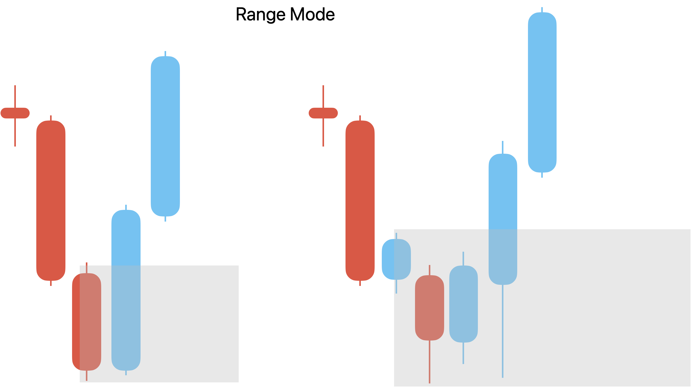
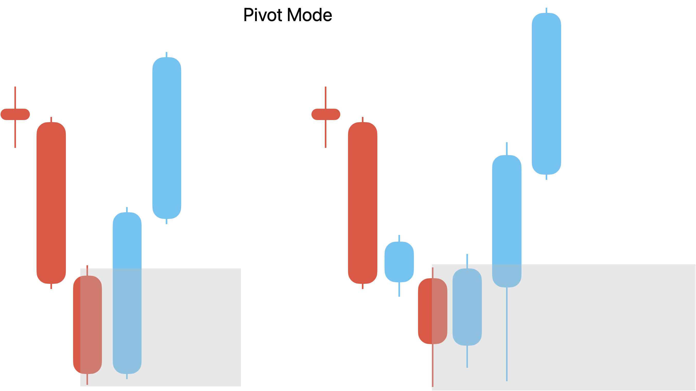
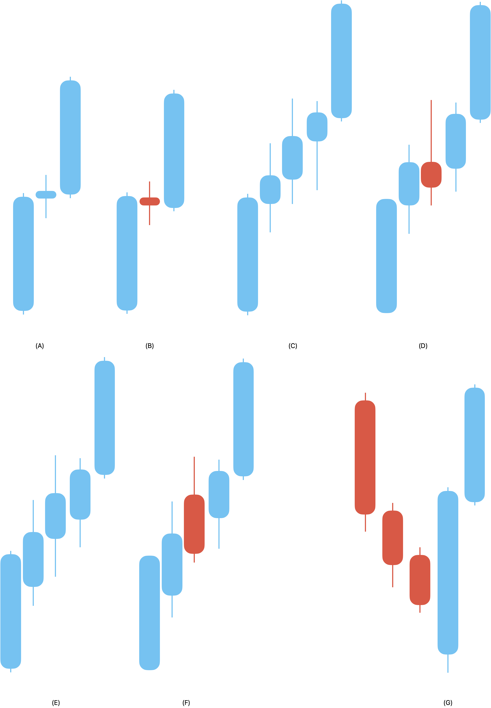
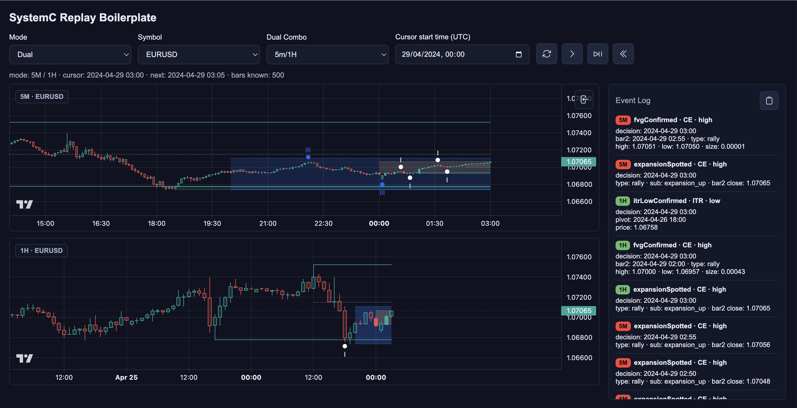

S/D Context - Zone Lifecycle Normalization
00Core Concept
S/D Context is a semantic object lifecycle normalizer. CE02 is the primitive event. The context layer turns that primitive into an object with geometry, owner timeframe, current state, event history for this bar, and snapshot projection.

Layer 3 flow event stream
CE02 FVG confirmed creates or skips a zone by guard. Each cursor bar updates the zone lifecycle. Interpreter projects active zones into the current snapshot. Fusion and Evidence Compiler decide which transitions matter downstream.
Zone ownership context only
Zone ownership is factual: demand for rally FVG, supply for drop FVG. Significance, flip meaning, and setup quality are deliberately outside S/D Context.
CE02 FVG confirmed -> SD zone object created or skipped by guard -> zone lifecycle transition each bar -> current SD zone snapshot -> Fusion current-truth snapshot -> Evidence Compiler candidate, if useful to Layer 4
01Construction
The notes define two drawing methods: range mode and pivot mode. The current runtime implementation is pivot-mode only: SDZone.drawing_mode is pivot, and SDZoneEngine hardcodes the pivot trace. The config currently also selects mode: pivot.
anchor_ts. This is unrelated to Structure Context's P/D anchors.
created_at is the CE02 event timestamp at confirmation.
Range Mode
Range mode is documented as a base between the prior FVG confirmation and current FVG anchor. It is useful as design reference, but it is not the current runtime engine.

Range window documented
Window is prior confirmation bar through current anchor bar, with the current confirmation bar excluded. Back-to-back anchors with zero base bars skip registration.
Range mode guard base_bar_count = bars between prior_anchor_bar and curr_anchor_bar base_bar_count == 0 -> skip base_bar_count >= 1 -> draw zone
Pivot Mode
Pivot mode finds the raw swing extreme by tracing backward from CE02 confirmation. The zone is anchored to that extreme and deduplicated by ex_bar per direction.

SDZoneEngine.Demand trace rally FVG
Start at bar3. Walk left while the previous low is lower than the cursor low. Stop when the low stops decreasing. The cursor is ex_bar.
Supply trace drop FVG
Start at bar3. Walk left while the previous high is higher than the cursor high. Stop when the high stops increasing. The cursor is ex_bar.
Zone guard dedupe
If the new ex_bar timestamp equals the most recently drawn ex_bar for the same direction, skip registration. This prevents shallow continuation FVGs from creating duplicate zones around the same structural extreme.
Pivot-mode formulas:
$$ DemandHigh = \max(ex_{-1}.high,\ ex.high,\ldots,\ bar1.high) $$ $$ DemandLow = \min(ex.low,\ldots,\ bar1.low,\ anchor.low) $$ $$ SupplyHigh = \max(ex.high,\ldots,\ bar1.high,\ anchor.high) $$ $$ SupplyLow = \min(ex_{-1}.low,\ ex.low,\ldots,\ bar1.low) $$02Lifecycle
A zone has one alive state with a boolean sub-state: WATCHING means price has not entered the zone; TAPPED means price is currently inside or has entered and not yet resolved. Resolution removes the zone from State Store immediately.
WATCHING in_zone = false
The zone waits for entry or a gap-past. If price gaps beyond the floor/ceiling before a normal tap, the zone resolves immediately as liquidity_run or liquidity_swept.
TAPPED in_zone = true
A tap is a state flag, not a score. The zone stays alive until it resolves as a close-through, wick sweep, or bounce out the entry side.
Resolved removed
bounced, liquidity_run, and liquidity_swept all remove the zone. Mitigated zones are not retained because breaker block entry is out of scope for System C.
BORN
-> ALIVE / WATCHING
entry into zone -> ALIVE / TAPPED
gap past zone -> RESOLVED
-> ALIVE / TAPPED
close through -> liquidity_run
wick through -> liquidity_swept
close out entry -> bounced
Demand resolution: liquidity_run = close < zone.low liquidity_swept = low < zone.low and close >= zone.low bounced = close > zone.high while tapped Supply resolution: liquidity_run = close > zone.high liquidity_swept = high > zone.high and close <= zone.high bounced = close < zone.low while tapped
03State Store
The State Store keeps only active zones. It enforces a count cap per direction and protects tapped zones from cap eviction. Resolved zones leave the active store but the engine remembers the last resolved zone snapshot.
SDZone: zone_id direction = demand | supply high low drawing_mode = pivot timeframe created_at # CE02 eventTimestamp anchor_ts # FVG bar2 timestamp, chart rectangle start in_zone # false WATCHING, true TAPPED
Register create zone
Registration inserts the zone and enforces max_zones_per_direction. If a direction exceeds the cap, the oldest WATCHING zone is evicted. TAPPED zones are protected.
Mitigate remove active
Mitigation removes the zone and records a ResolvedSDZone for current snapshot/debug use.
04Snapshot
Interpreter reads active zones after the detector completes. Runtime snapshots combine lower and higher zones; UI renders the active zones panel and chart rectangles. Fusion can project HTF zones into the LTF view without copying them into the LTF State Store.
SDZoneSnapshot: zone_id direction = demand | supply high low in_zone drawing_mode timeframe created_at anchor_ts anchor_unix distance
Distance is current-price relative, so nearest zones can be sorted without asking Layer 4 to inspect geometry.
$$ demandDistance = currentPrice - zone.high $$ $$ supplyDistance = zone.low - currentPrice $$Runtime snapshot: zones = lower_zones + higher_zones lower_last_resolved_zone higher_last_resolved_zone UI: WATCHING / TAPPED counts supply and demand active zone lists chart rectangles by timeframe / projection role
05Boundaries
S/D Context deliberately stays plain. It reports zones, taps, and resolution. It does not decide whether a zone is a flip, a premium/discount entry, a valid POI, or a phase transition.
Structure relation pullback confirmation
Structure Context may use a qualifying SD zone to confirm pullback with confirmed_by = sd_zone, but the P/D range boundaries remain wick-defined structure boundaries, not S/D zone edges.
Fusion relation dual mode
LTF zones stay in LTF State Store. HTF zones stay in HTF State Store. Fusion reads both snapshots and decides projection/display/current truth.
Evidence relation candidate quality
Zone quality, blocked reasons, flip meaning, and relation to liquidity or ChoCh belong to Evidence Compiler and Layer 4.
06Edge Cases
The consolidated notes preserve several important geometry corrections. These keep zones tight and prevent the S/D rectangle from swallowing the FVG itself.

Engulfing exception ex_bar is anchor bar
When ex_bar lands on FVG bar2, the normal window collapses. Demand uses ex_bar_minus1.high and ex_bar.low. Supply uses ex_bar.high and ex_bar_minus1.low.
FVG-overlap fallback pivot geometry
For demand, high candidates that invade above CE02 gap_top are excluded. For supply, low candidates that invade below CE02 gap_bottom are excluded. If no valid candidate remains, skip the zone.
Warm-up missing ex_bar-1 no draw
If ex_bar is the first available bar, there is no ex_bar-1, so the engine does not draw a new zone.

Demand fallback: valid_highs = [high for high in candidates if high <= CE02.gap_top] zone_high = max(valid_highs) Supply fallback: valid_lows = [low for low in candidates if low >= CE02.gap_bottom] zone_low = min(valid_lows)
07Algorithm
The runtime engine is a single heartbeat: append the current bar, draw zones from CE02 events, then run detector over active zones on the same bar.
def on_bar(row, ce02_events):
bar = _BarRecord(row)
self._bars.append(bar)
self._ts_to_idx[bar.timestamp] = len(self._bars) - 1
for event in ce02_events:
self._try_draw_zone(event)
self._run_detector(bar)
return SDZoneBarResult(
created=self._created_this_bar,
mitigated=self._mitigated_this_bar,
resolved=self._resolved_this_bar,
)
def _try_draw_zone(event):
direction = "demand" if event.fvg_type == "rally" else "supply"
ex_bar = self._find_ex_bar_idx(event.bar3_timestamp, direction)
if ex_bar.timestamp == self._last_ex_bar_ts[direction]:
return # dedupe same structural extreme
if ex_bar_idx == 0:
return # ex_bar-1 missing
zone_high, zone_low = pivot_formula_with_fvg_overlap_filter(...)
self._store.register(SDZone(..., drawing_mode="pivot"))
def _check_zone(zone, bar):
if not zone.in_zone:
if gap_past_zone(zone, bar):
mitigate(zone, "liquidity_run" or "liquidity_swept")
return
if enters_zone(zone, bar):
transition_to_tapped(zone)
else:
return
if close_through(zone, bar):
mitigate(zone, "liquidity_run")
elif wick_through_and_recover(zone, bar):
mitigate(zone, "liquidity_swept")
elif close_back_out_entry_side(zone, bar):
mitigate(zone, "bounced")
08Config
The S/D runtime reads the marker config block. Display settings are UI-only; the engine currently consumes enabled and max_zones_per_direction, while mode: pivot records the intended drawing policy.
marker_config:
sd_zones:
enabled: true
mode: pivot
max_zones_per_direction: 10
display:
chart_visible: true
dual_display: projected
demand_color: "rgba(102,187,106,0.12)"
demand_active_color: "rgba(102,187,106,0.28)"
supply_color: "rgba(239,83,80,0.12)"
supply_active_color: "rgba(239,83,80,0.28)"
def __init__(self, config, timeframe):
self._tf = timeframe
self._store = SDZoneStore(
int(config.get("max_zones_per_direction", 10))
)
self._last_ex_bar_ts = {
"demand": None,
"supply": None,
}
self._created_this_bar = []
self._resolved_this_bar = []
09Open Issues
The notes preserve range mode and pivot mode, but current code only implements pivot mode. Decide whether to implement range mode, archive it, or make the docs clearly historical.
Flip zones, breaker blocks, and ChoCh repair tags are not S/D registry fields. They remain Evidence Compiler / Layer 4 interpretation.
Keep mode: pivot, lower max_zones_per_direction, and rely on same-ex_bar dedupe plus FVG-overlap filtering before adding scoring.
Define normalized evidence candidates for zone tap, bounce, liquidity sweep, S/D-assisted pullback confirmation, and S/D relation to the Orderflow MSS monitor.